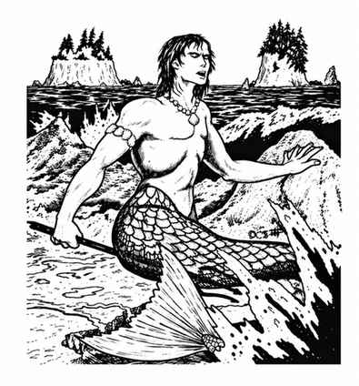

人鱼 · Merman
 |
|
人鱼生活在温带与热带海域。他们在海中采集植物、捕猎鱼类，也会实际放牧某些鱼群；只有晒太阳或前往海岸时才会离开水面。
人鱼拥有固定的海底聚落，通常建在布满通道和房间的礁石或海崖上；只有 10% 的机会建造贝壳、岩石和珊瑚组成的村落。聚落中会有供女性与幼鱼居住的区域（两者数量都等于人鱼总数），以及饲养食用鱼的网栏、工坊等设施。聚落由 3–18 条大型梭鱼守卫；人鱼已经学会驯养并使用这些鱼。
| 人鱼的武器 | 比例 |
|---|---|
| 三叉戟与匕首* | 50% |
| 弩与匕首 | 30% |
| 渔网、标枪与匕首 | 20% |
\*其中 20% 的人鱼还携带抓钩与 50 尺绳索。
有时人鱼会袭击水面船只；他们必须浮出水面并用抓钩钩住船只，命中率高达 90%。随后 10 名人鱼拉住绳索，每有一组这样的抓钩，船只移动力降低 1 寸；其他人鱼则用弩和飞镖射击暴露在甲板上的船员。抓钩最多可投掷 3 寸远。若抓钩被松开或割断，拉绳的人鱼下一轮无法攻击。静止的船只会在 4–16 轮内被人鱼控制，随后缓慢下沉并被胜者掠夺；袭击中的人鱼会暴露在船上远程攻击下，若使用火焰攻击，他们承受双倍伤害。人鱼使用自己的语言，其中 50% 也会说鳞人语。